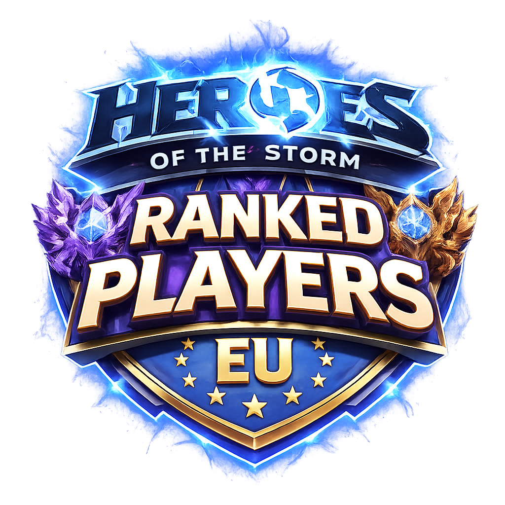

Heroes of the Storm Player List

Search the list, then hover a row to inspect the full profile card.
How the ranking is built
This player list blends directly available performance signals with repeated overlap from community-generated tier lists, available data/results, replays and even tournament standings. Placements reflect a weighted synthesis of observed stats, role impact, and cross-list consistency rather than a single source, which helps the ranking feel more comparative, stable, and transparent.
Behavioral factors also play a meaningful role. Toxicity, abuse, and overall conduct are considered alongside performance. Players are given the benefit of the doubt by default, and only adjusted if there is clear, consistent evidence of negative behavior.